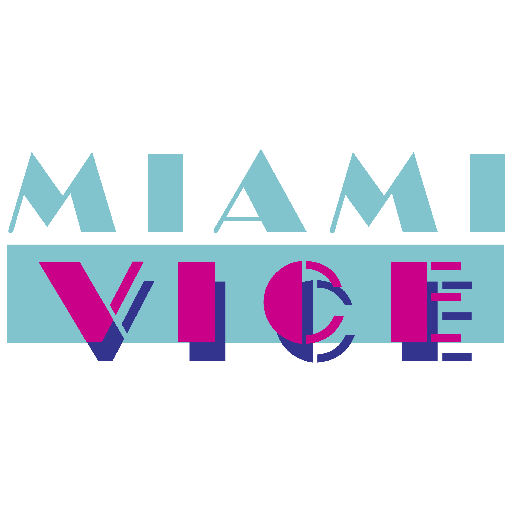

|  | MIAMI VICE |
|||
|---|---|---|---|---|
MENUHOME OVERVIEW LOCATIONS MUSIC CARS FASHION GALLERY CONTACTS |
Miami Vice is an American crime drama television series created by Anthony Yerkovich and produced by Michael Mann for NBC. The series stars Don Johnson as James "Sonny" Crockett and Philip Michael Thomas as Ricardo "Rico" Tubbs, two Metro-Dade Police Department detectives working undercover in Miami. The series ran for five seasons on NBC from 1984 to 1989. The USA Network began airing reruns in 1988 and broadcast a previously unaired episode during its syndication run of the series on January 25, 1990.
Unlike standard police procedurals, the show drew heavily upon 1980s New Wave culture and is noted for its integration of contemporary pop and rock music and stylish or stylized visuals. People magazine states that Miami Vice was the "first show to look really new and different since color TV was invented". Michael Mann directed a film adaptation of the series, which was released July 28, 2006. ConceptionThe conception of the show is unclear. One version of events states that the head of NBC's Entertainment Division, Brandon Tartikoff, wrote a brainstorming memo that simply read "MTV cops", and later presented it to series creator Anthony Yerkovich, formerly a writer and producer for Hill Street Blues. Yerkovich, however, has indicated he devised the concept after learning about asset forfeiture statutes allowing law enforcement agencies to confiscate the property of drug dealers for official use. The initial idea was for a movie about a pair of vice cops in Miami. Yerkovich then wrote a script for a two-hour pilot, titled Gold Coast, but later renamed it Miami Vice. Yerkovich was immediately drawn to South Florida as a setting for his new-style police show.ProductionIn keeping with the show's title, most episodes focus on combating drug trafficking and prostitution. Episodes often end in an intense gun battle, claiming the lives of several criminals before they can be apprehended. An undercurrent of cynicism and futility underlies the entire series. The detectives repeatedly refer to the "Whac-A-Mole" nature of drug interdiction,[citation needed] with its parade of drug cartels quickly replacing those that are apprehended. Co-executive producer Yerkovich explained:Even when I was on Hill Street Blues, I was collecting information on Miami, I thought of it as a sort of a modern-day American Casablanca. It seemed to be an interesting socio-economic tide pool: the incredible number of refugees from Central America and Cuba, the already extensive Cuban-American community, and on top of all that the drug trade. There is a fascinating amount of service industries that revolve around the drug trade—money laundering, bail bondsmen, attorneys who service drug smugglers. Miami has become a sort of Barbary Coast of free enterprise gone berserk. The choice of music and cinematography borrowed heavily from the emerging New Wave culture of the 1980s. As such, segments of Miami Vice sometimes used music-based stanzas, a technique later featured in Baywatch. As Lee H. Katzin, one of the show's directors, remarked, "The show is written for an MTV audience, which is more interested in images, emotions and energy than plot and character and words." These elements made the series into an instant hit, and in its first season saw an unprecedented fifteen Emmy Award nominations. While the first few episodes contain elements of a standard police procedural, the producers soon abandoned them in favor of a more distinctive style. Influenced by an Art Deco revival, no "earth tones" were allowed to be used in the production by executive producer Michael Mann. A director of Miami Vice, Bobby Roth, recalled: There are certain colors you are not allowed to shoot, such as red and brown. If the script says "A Mercedes pulls up here," the car people will show you three or four different Mercedes. One will be white, one will be black, one will be silver. You will not get a red or brown one. Michael knows how things are going to look on camera. Miami Vice was one of the first American network television programs to be broadcast in stereophonic sound. It is mixed in stereo for its entire run. | |||
by Bosiy E. 2023 |
||||